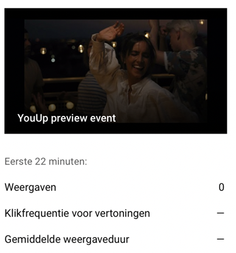
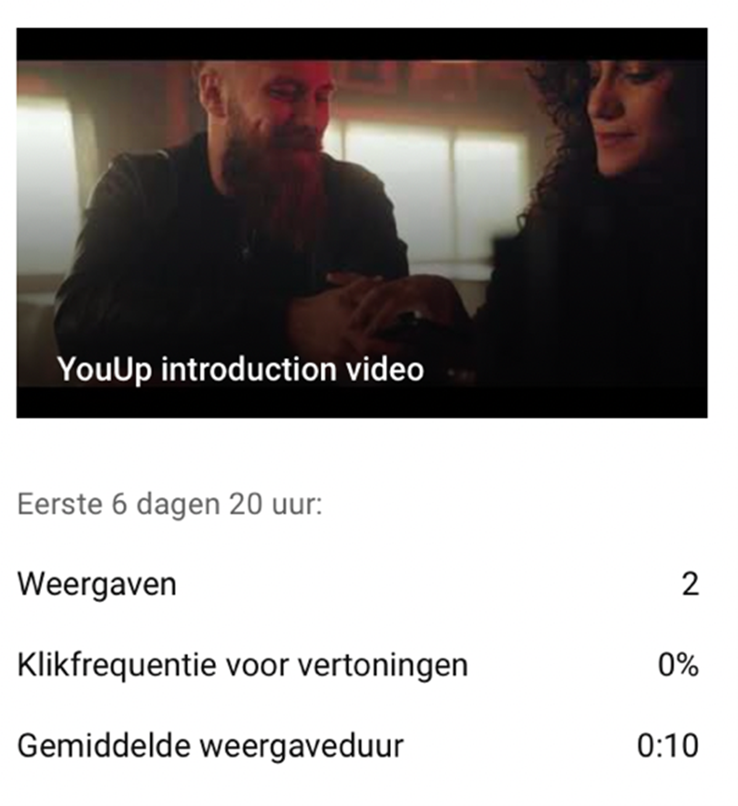
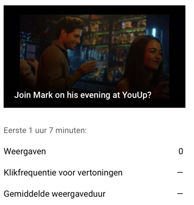
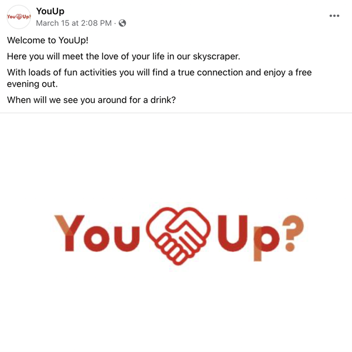
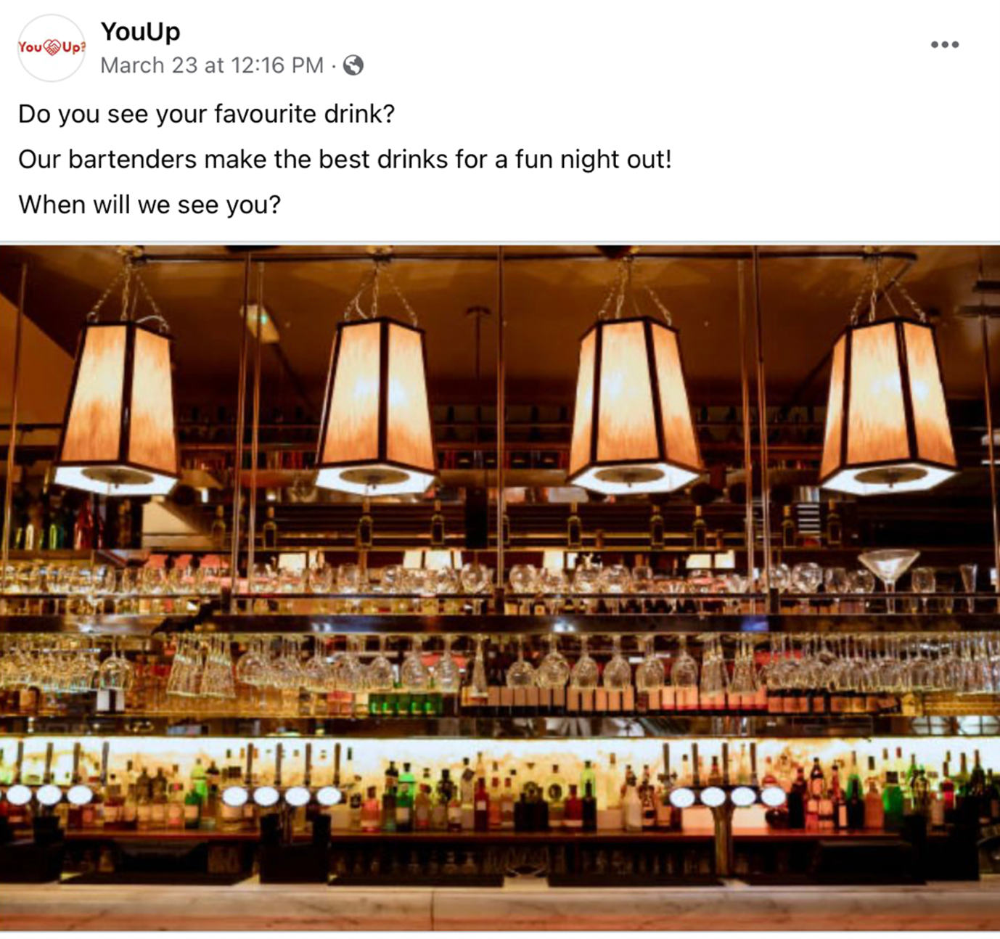
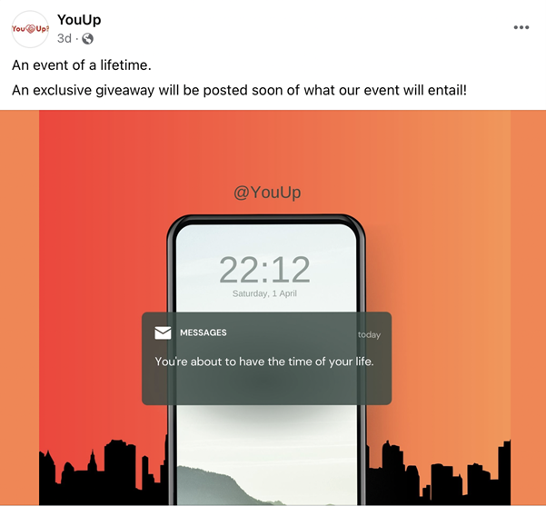
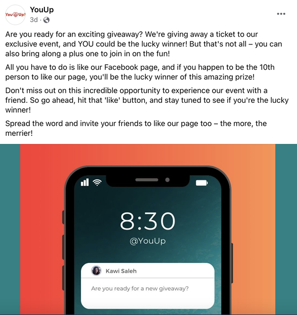
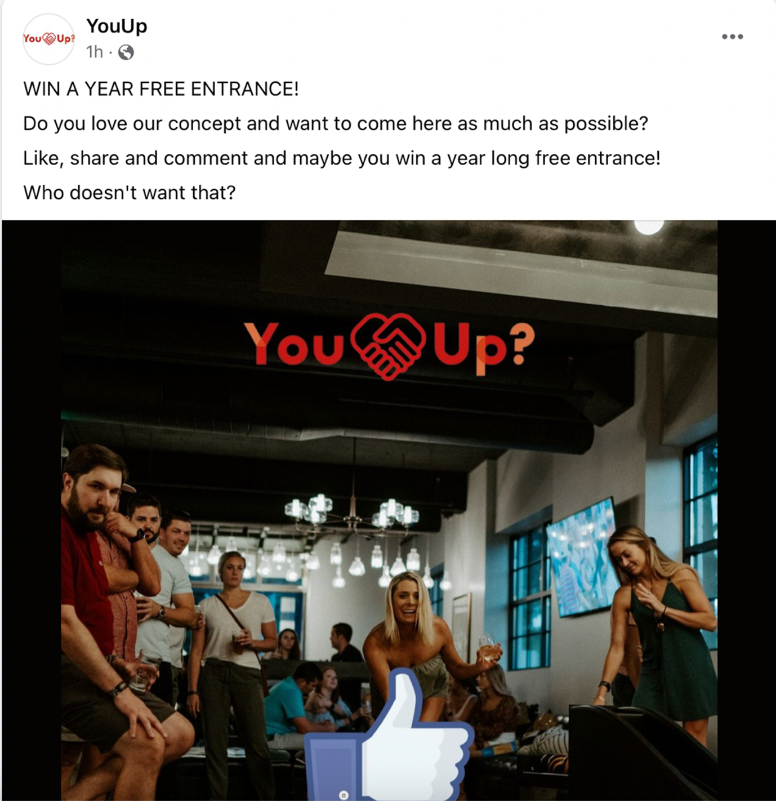
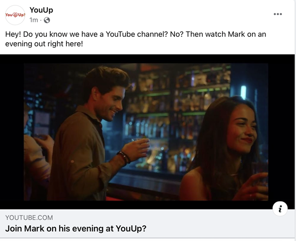
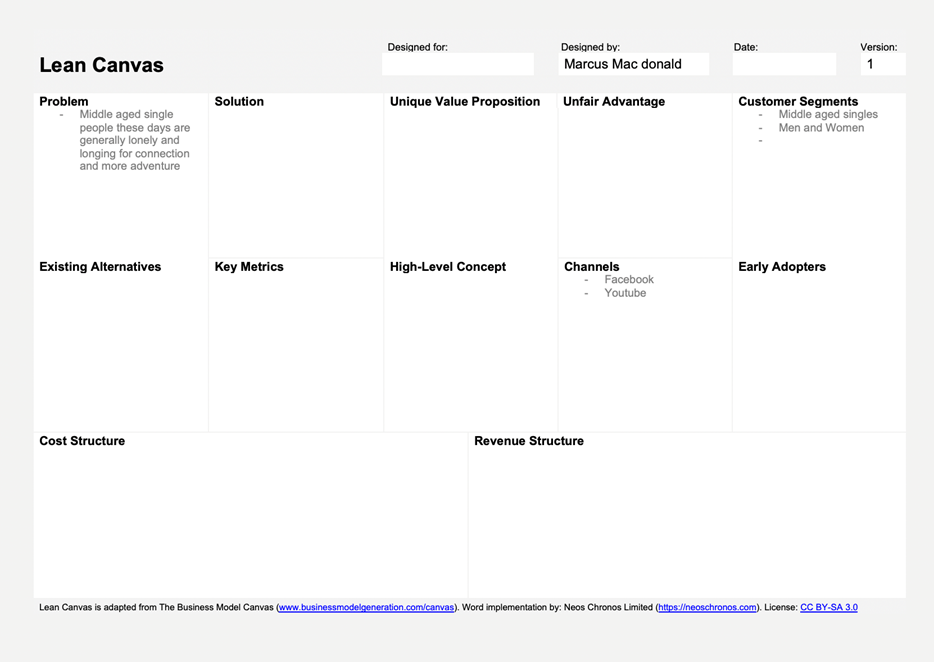

General Information
This branded website is publicly available at
https://youupbrand.github.io/YouUpNew/
This website was created by…
- Noortje de Jong (ID: 211640)
- Marcus Mac Donald (ID: 202865)
- Kawi Saleh (ID: 210008)
- Leila Phiri (210099)
- Luuk Kornelisse (213078)
Content
Please clarify here the match between students and pieces of content. Make sure that you provide a link to the correct page within the website
Production
Design Elements
The website is a “teaser” pre-launch website to inform potential consumers on what our brand stands for. The website comprises of what services we offer as well as informing them of what the future holds regarding the events that we are organising. The pre-launch will be able to bring our team’s vision and values to life, which will lead to attracting the right audience which are 40-50-year-old middle aged singles who are looking for a sense of adventure in their dating lives.
-
Colour scheme
As our team strived to go for lively colours in comparison to the dating market that uses undersaturated colours, we concluded upon choosing a colour palette that included the colour carmine red, orange, white, and beige. Orange defines spontaneity and creativity which intertwines with red that signifies passion, love, liveliness, and adventure, which intertwine with our brand’s visions. In addition, white signals clarity and openness whilst beige symbolises tranquillity and modernism as well as giving the brand an inviting and trending feel. The first version of the lean canvas states that the customer segments are 40-50-year-old middle aged singles who consist of men and women, thus we chose these lively colours to bring the under-saturation of the current digital dating world to life.
-
Carmine red: #C91716
-
Orange: #D97143
-
Beige: #F0C9B9
-
White: #FFFFFF
-
Font choices
team decided to choose lively yet modern fonts such as Schibsted Grotesk Medium 500 and Schibsted Grotesk SemiBold 600 spontaneously whilst preparing for our Marketing presentation. The reasons as to why we chose these innovating fonts is because Schibsted Grotesk SemiBold 600 compliments our website’s headers exquisitely whilst maintaining a sleek look – we want to be able to compel our consumers to sign up via our website as well as staying satisfied during their scrolling sessions. Secondly, Schibsted Grotesk Regular 400 was chosen as our main font to upkeep the website’s conciseness and functionality and also allow consumers that visit our website to have an overly satisfactory readability level. As our team strives to compel 40 to 50-year olds that seek thrill and excitement, the fonts mentioned above give a sense of enthrallment; this aligns with the mood that we want to extract from our team to the consumers of fun and joy. S
User interface patterns
The first interface element that was used in our website is called the dropdown menus, which is on the landing page of our website. Since the template already came with dropdown menus, our team made sure to make maximum use of them to ensure that our brand identity and visions are showcased to all people visiting the website. Our team kept the cognitive load of the website to a minimum to ensure an easy and efficient experience during the design aspect of the website. In addition, there are also buttons in the hero section of our page to compel users on the website to visit our other forms of social media.
As our target audience are 40-50-year-old middle aged singles, we want to ensure that all our other social media platforms are available for them if they want to keep up with our services. There are text fields on the landing page as well as the other pages to add crucial forms of information to inform our users of what our services are about. Icons are also placed next to the dropdown menus of our company’s logo to add brand identity and to make the company’s logo memorable towards the consumers on the website. The icon is also hyperlinked for users who visit other pages from the landing page to bring them back to the main page for efficiency. The third version of the lean canvas states that our solution is to create a brand where our target group can create connections without the need for digital dating apps, thus having the necessary icons on the hero page which are hyperlinked to our YouTube and Facebook channels are crucial.
Organisation of navigation and content
With the use of Information Architecture (IA), we were able to create a successful landing page consisting of dropdown menus in order to bring the brand’s vision and mission to life. The menu system is placed clearly on the landing page for all users to easily navigate as our target audience consist of 40-50-year-old middle aged singles who have a comfortable to higher income, which indicates their higher level of knowledge in technology. By ensuring easy and navigable dropdown menu and hamburger menu, we allow users to explore the website freely whilst being informed on what the website and brand has to offer. The main page has an image of what the YouUp? brand is represented as, which is a skyscraper in which our intended target audience will visit to find their potential dating partners. Furthermore, our team made sure that the Responsive Design was efficient as the website needs to adhere to various screen sizes and devices such as smartphones and laptops.
Credits
Unsplash:
Testing Report
Good luck Kawi!! you can type here :P
Marketing
Context of campaign and promotional activities
Our brand vision is: In a world where technology has made dating more convenient, but less personal, we believe that building authentic connections is the key to inspiring meaningful relationships. We would help build a deeper connection.
With brand values:
- Euphoria
- Respect
- Freedom
- Adventure
- Embracing diversity
Our brand wants to let single 40 to 50 year olds meet each other in our skyscraper. With each floor being a different activity so you do not have to go on a second date because you can start right then and there. There is a restaurant, club and a lot more. It is so people form a true connection in real life instead of via the internet.
We used Facebook and YouTube for our promotional activities. To reach our objectives we posted regularly and tried to make engaging content. We posted about our events and building and did a giveaway.
Learning Points
Our learning points are:
Our objectives were too high in the beginning. Facebook and YouTube were difficult platforms to work with because our posts did not get shared in the algorithm. We managed to get more followers Facebook by posting even more. On YouTube this did not work and we researched what would work. We started to try and link the YouTube videos to our Facebook but due to the short period of time we do not know if this worked yet.
Our strategy on Facebook seems to work when we post more regularly because that is the moment we gained more followers. On YouTube however there was no good posting strategy found, for the future we could see if more hashtags or sharing would work.
We did expect to gain followers and people being excited about our brand. However we did not expect the difficulties with Facebook and YouTube as main platforms. So for the future this is something we will keep in mind and immediately start posting regularly and linking the YouTube to other media platforms.
Future Planning
With this project we have done marketing on YouTube and Facebook. In the end we have 17 followers on Facebook and a total of 16 likes. On YouTube we have a total of 0 subscribers and 0 likes. This result is less then we wanted to reach based upon our first objectives.
The execution of our project was in the beginning not well. We did not post regularly enough and this resulted in no likes or views on YouTube or Facebook. After two weeks we reflected on this and started posting more. This resulted in a growth of 16 likes on Facebook, this was a result we were pleased with. On YouTube we do not have a lot of views yet. To change this in the future we want more collaborations with bigger influencers so they can introduce us to the target group. We also want to start posting YouTube shorts to be in that algorithm.
We still believe our persona is correctly formed because with more posts we really started to gain more followers.
The objectives for the future are:
Reach objective:
To reach 50 persons on Facebook by 1st of may 2023.
And to reach 15 persons on YouTube by the 1st of may 2023.
Affect objective:
That of our reached persons 50% knows about our brand and has a positive brand awareness. By the 1st of may.
Response objective:
Reach 40 likes on Facebook by the 1st of may 2023.
And reach 10 subscribers on YouTube by the 1st of may 2023.
The future planning is going to be:
Facebook:
| Date |
Platform |
Post |
15-04-2023 |
Facebook |
Introduction Kingsnight event |
17-04-2023 |
Facebook |
Post about new drink |
19-04-2023 |
Facebook |
Introducing the crew |
21-04-2023 |
Facebook |
Kingsnight preparation post |
25-04-2023 |
Facebook |
Kingsnight event today post |
28-04-2023 |
Facebook |
Sneak previews aftermovie kingsnight
|
1-05-2023 |
Facebook |
Prepare for the summer post |
| Date |
Platform |
Post |
16-04-2023 |
YouTube |
Introduction owners |
18-04-2023 |
YouTube |
How to make our signature drink |
21-04-2023 |
YouTube |
Impression video normal night |
23-04-2023 |
YouTube |
Preview Kingsnight |
29-04-2023 |
YouTube |
Kingsnight aftermovie |
2-05-2023 |
YouTube |
Summer events sneak preview |
Professionalism
Present and organize below all social media/online activities of the campaign. Context and material are according to the brand style, image, and vision. Images on the site are of high-quality, readable, and properly designed.

With this video we wanted to give an impression how an event would look like so it will promote the future events. It looks engaging and like a place where you want to be.

This video made an impression about the brand. It shows the building and the inside so people can get an understanding what our brand is about and what kind of activities are happening inside.

This is influencer Mark and he took his followers with him on a night out at the YouUp? Bar. This will let people who are a fan of Mark know he is interested in the brand and will make them influenced to also come to our bar.
FACEBOOK

This is our introduction post with our logo so people know what our brand logo looks like.

This post was to engage people by commenting and pursuing them to come to the bar to drink.

This is the promotion for our giveaway.

This is our second announecement for the giveaway.

This is our giveaway post to win a year long free entrance.

This post was made to try and get our Facebook followers to our YouTube.
Management
Lean Canvas

Validation of Assumptions
Write a reflection on the choices made in creating choosing the trademark, including an analysis of the existing alternatives.
Appendix
BUas Drive of test subjects, versions of the Lean Canvas, and interviews
-
https://edubuas-my.sharepoint.com/:f:/g/personal/210008_buas_nl/Eu9wpr_ho9JCmXmudh8wppAByvx6_Wbbjf9mN8zewzOA7Q?e=oo6TZV